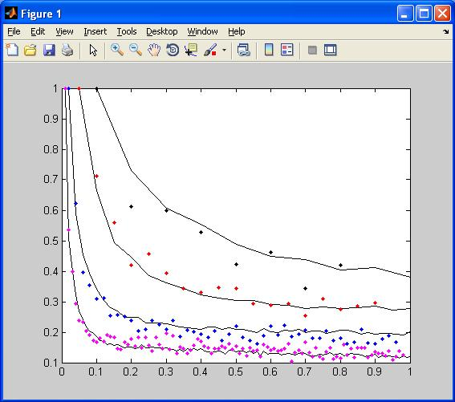

Stochastic model of STP at the Calyx of Held -------------------------------------------- This model investigates mechanisms contributing to short term plasticity at the calyx of Held, a giant glutamatergic synapse in the mammalian brainstem auditory system. It is a stochastic version of the model described in: Hennig, M., Postlethwaite, M., Forsythe, I.D. and Graham, B.P. (2007). A biophysical model of short-term plasticity at the calyx of Held. Neurocomputing, 70:1626-1629. This version introduces stochastic vesicle recycling and release. It has been used to investigate the information transmission properties of this synapse, as detailed in: Yang, Z., Hennig, M., Postlethwaite, M., Forsythe, I.D. and Graham, B.P. (2008). Wide-band information transmission at the calyx of Held. Neural Computation, 21(4):991-1018. The model is written in Matlab. The provided main file runs the model for 1 second of simulated time with stimulation by regular frequencies of 10, 20, 50 and 100Hz, for comparison with experimental data from the calyx. A graph similar to Figure 1 from the paper is created:  Main file: run_model.m Model file: coh_stoch_mod.m Stimulation file: inhreg.m Experimental data in expdata folder. These model files supplied by Bruce Graham.